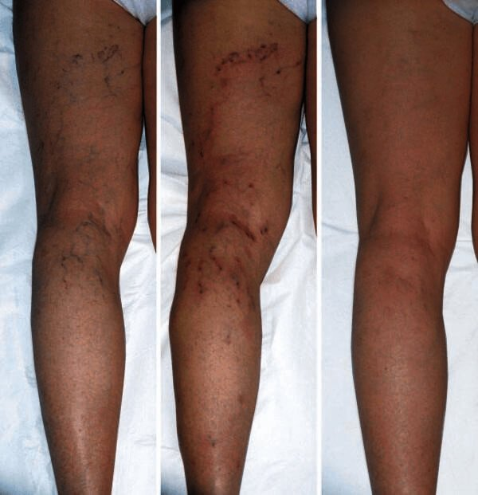
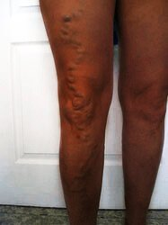
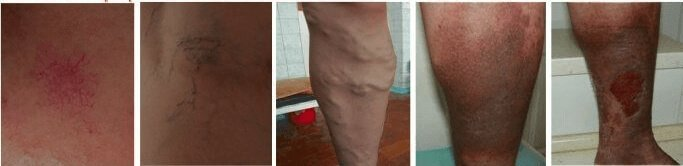
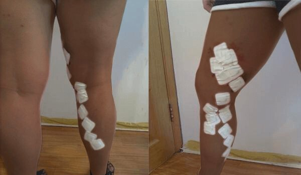
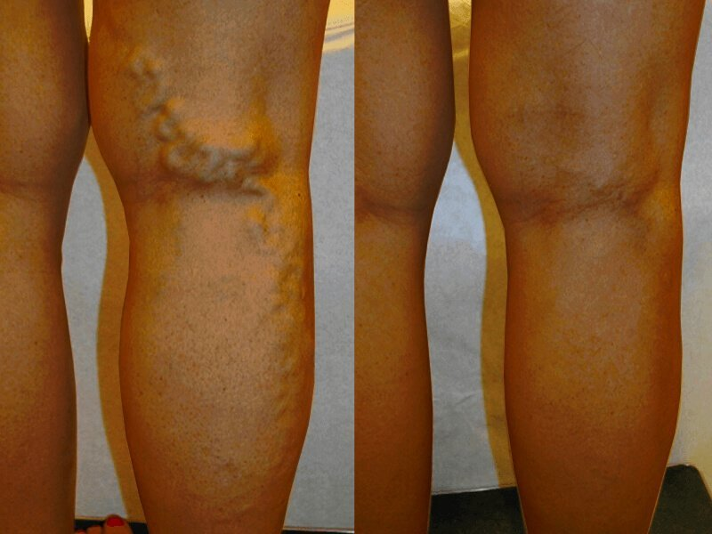
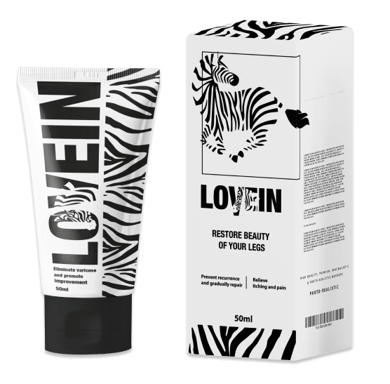

पढ़िए मेरी कहानी, कैसे मैंने अपने बच्चों और अपने भविष्य के खातिर लिए वेरिकोज़ नसों से निजात पाई
हैलो दोस्तों, आज मैं आपको वेरिकोज़ नसों के अपने अनुभव के बारे में आपको थोड़ा बताऊँगी औ यह शेयर करूँगी कि कैसे इनके कारण मुझे अस्पताल तक में भर्ती होना पड़ गया था। मैं आपको साथ ही यह भी बताऊँगी कि इनसे हमेशा के लिए छुटकारा कैसे पाते हैं, वो भी अपने घर पर ही।
वेरिकोज़ नसों के बारे में कोई एक चीज जो मैंने जानी है वो यह है कि ये एक गंभीर समस्या होती हैं जो आगे जाकर जानलेवा बीमारियों को जन्म दे सकती हैं। मैं हमेशा एक बड़ा परिवार चाहती थी लेकिन हर डेलीवरी के साथ मेरी वेरिकोज़ नसों की समस्या और बिगड़ती ही चली जा रही थी।
मेरे 5 सुंदर और स्वस्थ बच्चे हैं, और मैं जितना हो सके उनके साथ जीना चाहती हूँ, लेकिन मेरी 5 वीं डेलीवरी के बाद मेरी समस्याएँ बहुत बढ़ गईं। मेरी नसें इतनी ज़्यादा दिखने लगीं कि मुझे लगा ये फट जाएँगी ।
एक दिन सुबह मैं अपने तीन बच्चों के साथ पार्क में गई थी, मैं बड़ी उदासी से उन माँओं की ओर देख रही थी जो अपने बच्चों के साथ खेल रही थीं, और एक मैं थी, जो एक 70 साल की बुढ़िया की तरह बेंच पर बैठी थी ,क्योंकि मेरे पैरों में बहुत दर्द रहता था और मुझे उनकी सूजन पर बेहद शर्म आती थी। मैंने हिम्मत करके दर्द से लड़ने का फैसला किया और किसी तरह उठ कर बच्चों के साथ दो मिनट के लिए खेलने चली गई, मेरे पैरों में एक अजीब सी सनसनी फैल गई, ऐसा लगा पैरों में दर्द का एक तूफान सा आ गया है और फिर मैं जमीन पर गिर गई। दूसरी माँओं ने तुरंत एक एम्ब्युलेन्स बुलाई और मैं 10 मिनट बाद ही अस्पताल में थी । अस्पताल के डॉक्टर ने बताया कि मुझे कैंसर हो सकता है और मेरी वेरिकोज़ नसों से मेरे पैरों में गैंगरीन भी हो सकता है .
मेरी वेरिकोज़ नसों की समस्या आनुवांशिक है, मेरे परिवार में यह कई पीढ़ियों को परेशान करती आई है । ये मेरी मम्मी को हैं, मेरी बहन को हैं, मेरी दादी भी इनसे परेशान थीं और मुझे भी इन्होने अपनी चपेट में ले लिया है।
मेरी नसें इतनी ज़्यादा दिखने लगीं थीं कि मुझे लगता था ये फट जाएँगी
आज मुझे लगता है काश मैंने पहले इन्हें गंभीरता से ले लिया होता , मैं सोचती थी कि वेरिकोज़ नसों की समस्या वाले लोग बिना किसी इलाज के पूरी ज़िंदगी काट लेते हैं। मुझे यह नहीं पता था कि समय के साथ इनके कारण गंभीर बीमारियाँ हो सकती हैं, इनसे थ्रोंबोसिस हो सकता है, पूरे पैर में गैंगरीन हो सकता है और यहाँ तक कि कुछ प्रकार के कैंसर भी आ सकते हैं ।कई बार मैं बहुत अधिक दर्द सहती थी, मेरी वेरिकोज़ नसें भद्दी दिखती थीं और उन्हें छूने में भी मुझे बहुत घिन आती थी । मैंने स्कर्ट वगैरह पहनना बंद कर दिया था क्योंकि मुझे बहुत शर्म आती थी।
जब मैं अस्पताल से वापस आई तो मुझे डॉक्टर ने मुझे कोई दवाई नहीं दी और सिर्फ ऑपरेशन करा लेने के लिए कुछ टिप्स दी थीं। इसके बाद तो मैं बहुत डर गई और मैंने फैसला कर लिया कि अब इनका कुछ करना ही पड़ेगा और मैं खुद इनका इलाज ढूँढने में लग गई।
मैंने इसके लिए कई तरह की हर्बल दवाएँ आजमा कर देखीं ,आयुर्वेदिक नुस्खे, दुर्लभ औषधियों वाली हर्बल क्रीमें और न जाने क्या-क्या। लेकिन कुछ असर नहीं हुआ और इसलिए मैं दूसरे रास्ते के बारे में मुझे एक दूसरा रास्ता अपनाना पड़ा। मैं ऑपरेशन के बारे में सोचने लगी ,लेकिन 6 अलग-अलग डॉक्टरों से राय लेने के बाद मैंने समझा कि ऑपरेशन के बाद नसें दोबारा वापस आ जाने का रिस्क 99% होता है । मुझे रजोनिवृत्ति में जा रही महिलाओं जैसे लक्षण आने लगे थे, बहुत थकान रहने लगी थी, बहुत घबराहट रहती थी और मैं काम पर भी नहीं जा पाती थी, क्योंकि मेरे पैरों में बहुत ज़्यादा दर्द रहता था ।
कई चिंता भरी रातों और लगातार डिप्रेशन के बाद मुझे आखिरकार उम्मीद की एक किरण दिख ही गई।
मैं उस दिन को कभी नहीं भूलूँगी , मुझे याद है मैं उस दिन घर वापस आकर सीधे इंटरनेट पर किसी ऐसे नुस्खे की खोज में लग गई थी जो वाकई में काम करे। डॉक्टरों के एक फोरम में लिखे एक वाक्य ने मेरा ध्यान खींचा। इस वाक्य में लिखा था कि वेरिकोज़ नसों के इलाज का कोई असर नहीं होता क्योंकि आज का चिकित्सा विज्ञान लक्षणों की इलाज करता है न कि रोग की जड़ का। उसी वाक्य के बाद एक क्रीम लगाने की सलाह दी गई थी जिससे वेरिकोज़ नसों का इलाज संभव था और जिसका नाम था , जिसके सकारात्मक परिणामों की दर काफी ज़्यादा थी। मैंने यह खोजने की बहुत कोशिश की कि यह क्रीम आखिर कैसे और कहाँ मिल सकती हैं और आखिरकार मुझे यह स्टोर मिला .
खास ऑफर!एक डॉक्टर ने मुझे यह बताया कि मुझे कैंसर भी हो सकता है क्योंकि मैंने वेरिकोज़ नसों पर ध्यान नहीं दिया है और समस्या आगे बढ़ गई है।
मैंने ऑर्डर की यहाँ से और इसे रोज लगाने लगी, और एक हफ्ते के अंदर मेरी समस्याएँ 80% कम हो गईं। । दूसरे हफ्ते के बाद तो मेरी वेरिकोज़ नसें पूरी तरह गायब हो गईं।
यह क्रीम मेरे जीवन में एक उम्मीद की किरण लेकर आई है । मैं इस क्रीम से होने वाले अन्य फायदे भी बताती हूँ: यह घावों को भर देती है, नसों की दीवारों को मजबूत करती है , दर्द से राहत देती है, रक्त के थक्कों को कम करती है और नर्म उत्तकों की सूजन कम करती है।
निजी रूप से कहूँ तो, ने मेरा जीवन पूरी तरह से बदल दिया है और अब मैं दोबारा अपने परिवार के साथ समय बिता सकती हूँ, मैं अपने बच्चों के साथ खुश रह सकती हूँ। मैंने यह उनके लिए ही किया है। इस पूरे दौर में मेरे बच्चे ही मेरी प्रेरणा थे। अब आखिरकार मैं एक सामान्य जीवन जी सकती हूँ और अपने बच्चों को बड़ा होते देख सकती हूँ। बच्चे भी अपनी माँ को स्वस्थ देखकर खुश रहते हैं।
जिन लोगों को इसमें दिलचस्पी है उन्हें बताना चाहूंगी कि मैंने अपना ऑर्डर इस वेबसाइट पर दिया था । यही एक कंपनी है जिसके पास बेचने का सर्टिफिकेट है। डेलीवरी के बारे में बताऊँ तो यह कैश ऑन डेलीवरी है। इसलिए कोई डर नहीं है। का रेट भी डिस्काउंट पर होता है, इसलिए इस मौके को हाथ से न जाने दें।
मैं उम्मीद करती हूँ कि यह जानकारी मददगार रहेगी ,और आप कुछ ही दिनों में अपने पैरों की सुंदरता और स्वास्थ्य वापस पा सकेंगी! मेरी हार्दिक शुभकामनाएँ आपके साथ हैं!